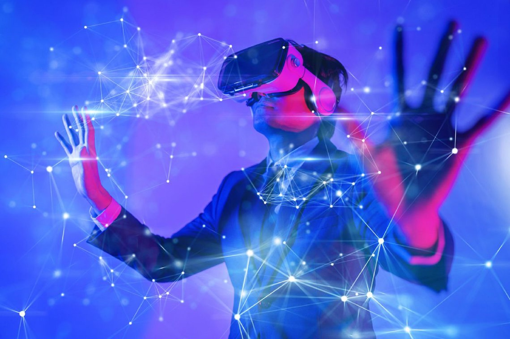
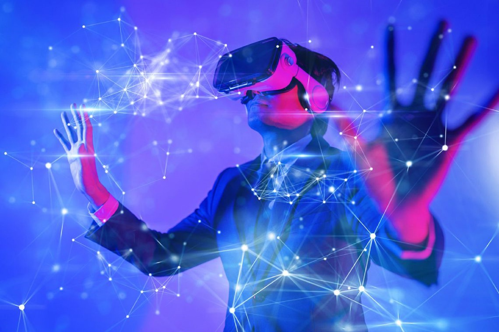
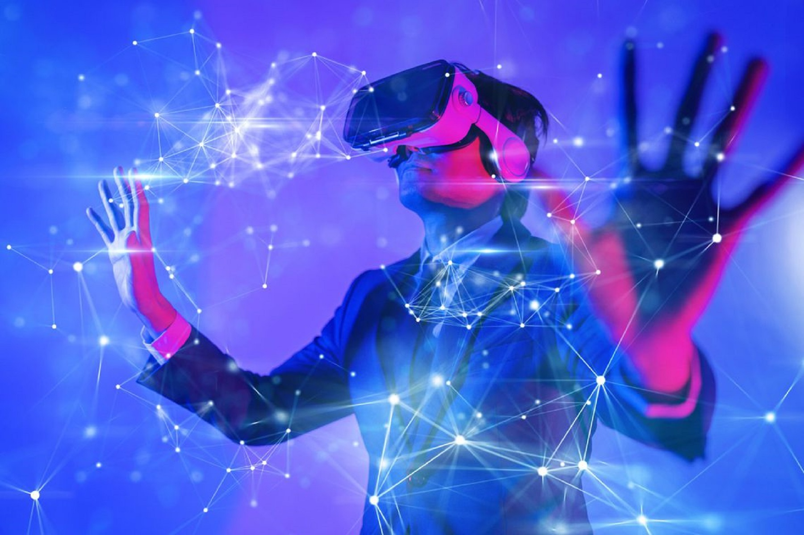

Wirtualna rzeczywistość (VR) to technologia umożliwiająca tworzenie trójwymiarowych, komputerowo generowanych środowisk, w których użytkownik może zanurzyć się i wchodzić w interakcje w sposób zbliżony do rzeczywistości. Dzięki specjalnym urządzeniom, takim jak gogle VR i kontrolery ruchu, użytkownik może poczuć się, jakby znajdował się w odmiennym świecie—zarówno symulującym realne miejsca, jak i całkowicie fikcyjne scenariusze. VR wykorzystywana jest m.in. w grach, szkoleniach medycznych czy wizualizacjach architektonicznych, zapewniając immersyjne doświadczenia niewykonalne w tradycyjnych mediach
